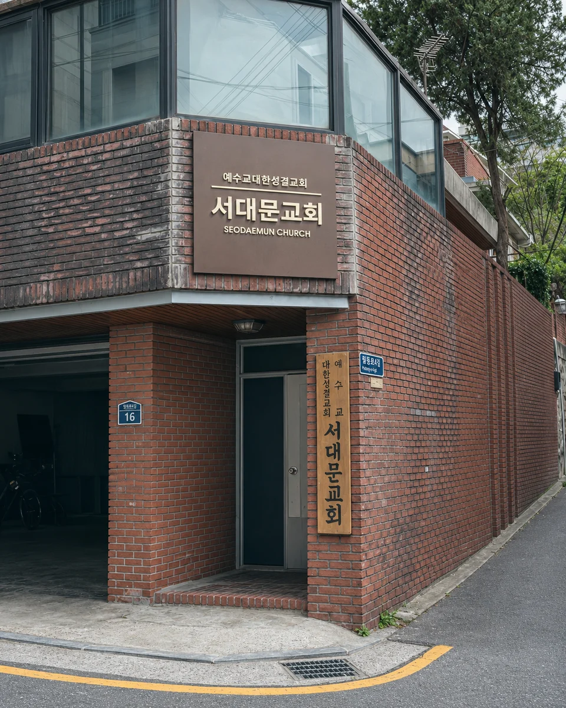

교회 소개
서대문교회를 소개합니다
서대문교회는 서울 서대문구에 있는 예수교대한성결교회 소속 교회입니다. 처음 교회를 찾으시는 분과 오랜만에 예배에 오시는 분 모두를 환영합니다.
함께 드리는 예배
예배 안내
- 주일오전예배
- 오전 11:00
- 수요예배
- 오후 7:00
- 새벽기도회
- 오전 5:30
- 금요기도회
- 오후 8:00
처음 오시는 분께
오시는 길

드래그하거나 방향키로 사진을 이동하세요.
03752 서울시 서대문구 경기대로7길 16-5